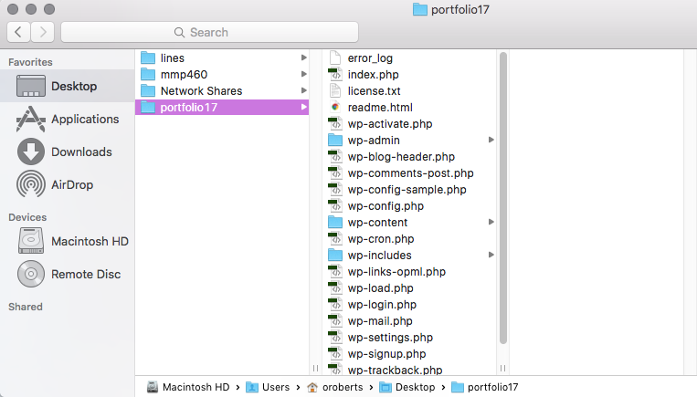
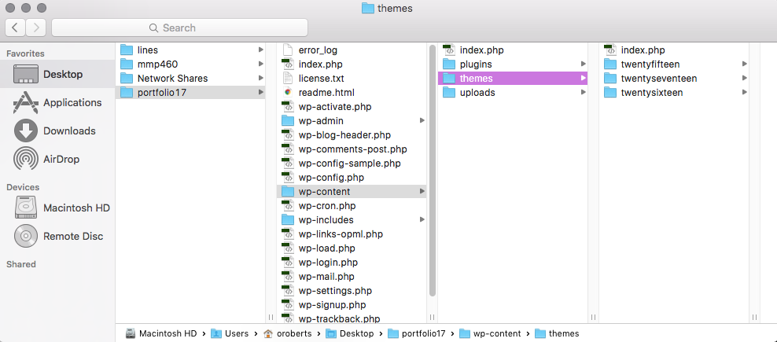
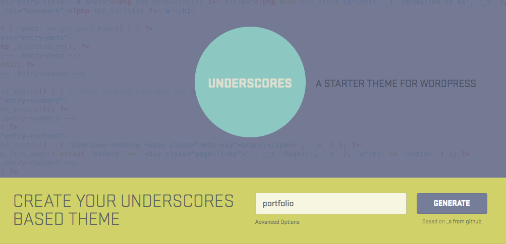
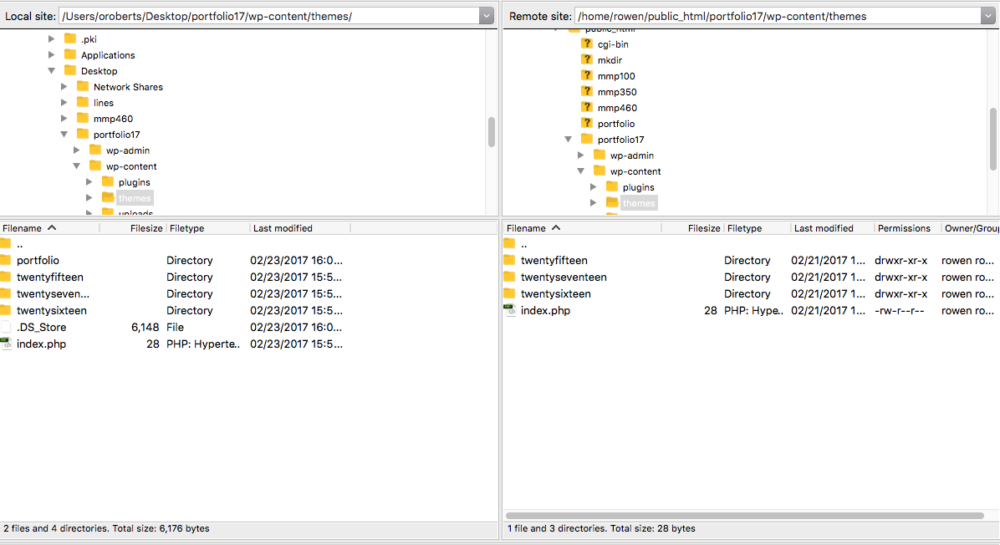
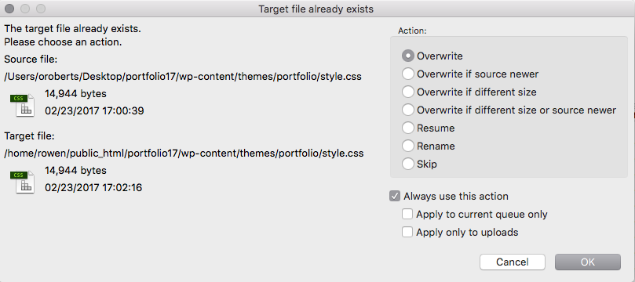
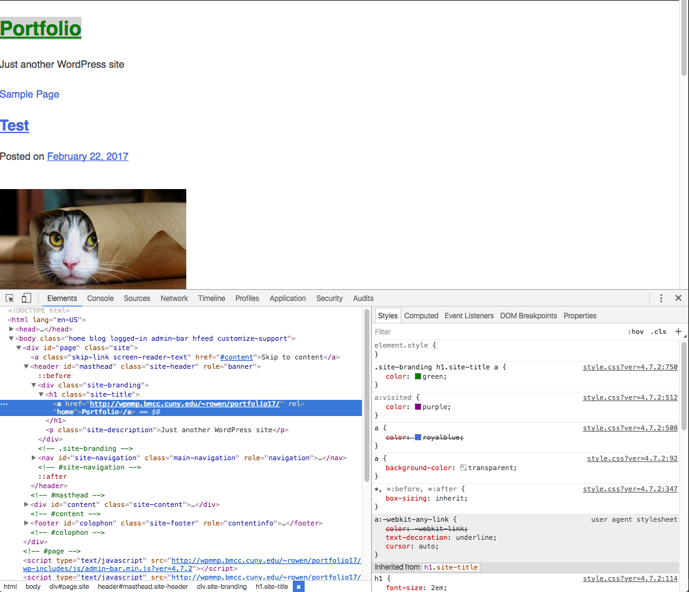

WordPress works with a three-tier architecture. In three-tier architecture there is a presentation layer, an application layer and a data layer.
WordPress themes set up the basic templates that wordpress uses to dynamically construct pages. Templates tell WordPress what styles to use, what content to load and what order to do it in. You can think of a WordPress template as a recipe for a web page, explaining the ingredients and amounts of everything needed to constuct a page.
The files we installed previously are the application layer. They make WordPress run and allow us to communicate with the database. We do not need/want to edit this code.
Our work takes place inside of the themes folder in WordPress.
This is where all of the presentation layer or front-end files exists. We can edit the template layouts, the styles and CSS and basic functionality here.
When a WordPress page is generated, a request is made from the client, is routed through WordPress to the database and then sent back to the client with a HTML/CSS/JS response.
The theme includes templates that tell WordPress where to add the content.
To start customizing the portfolio we will start making our own theme using a starter theme. A starter theme is a barebones theme that builds most of the basic essentials needed for a WordPress blog but without much ornamentation or specific functionality, allowing us to customize and build on top it.
This semester we're going to work with a theme starter called underscores. You can visit the link to generate and download a new theme.
Once you have downloaded the theme, unzip the archive and move it to the
Then upload the theme via FileZilla.
Next activate the theme in your WordPress Dashboard under the
When you view your portfolio you will see there are nothing but default styles. We will start by adding some CSS styles to the theme.
Every WordPress theme must have a style.css file in the main theme directory. This file defines the name of theme, the author and other details. Is is also the beginning point for all of the styling of the theme.
/*
Theme Name: portfolio
Theme URI: http://underscores.me/
Author: Underscores.me
Author URI: http://underscores.me/
Description: Description
Version: 1.0.0
License: GNU General Public License v2 or later
License URI: LICENSE
Text Domain: portfolio
Tags:
This theme, like WordPress, is licensed under the GPL.
Use it to make something cool, have fun, and share what you've learned with others.
portfolio is based on Underscores http://underscores.me/, (C) 2012-2016 Automattic, Inc.
Underscores is distributed under the terms of the GNU GPL v2 or later.
Normalizing styles have been helped along thanks to the fine work of
Nicolas Gallagher and Jonathan Neal http://necolas.github.io/normalize.css/
*/_s or underscores has mapped out all of the main parts of the WordPress template inside of the CSS style sheet, so all we need to do is read through it and add styles where we see fit.
Each time you edit
FileZilla will prompt you to confirm overwriting the file. I recommend turning on "Always use this action" for overwrite, so you won't have to confirm each time.
Use Chrome dev tools to preview changes and inspect the parts of the site to make it easier to know what your style changes will look like.
